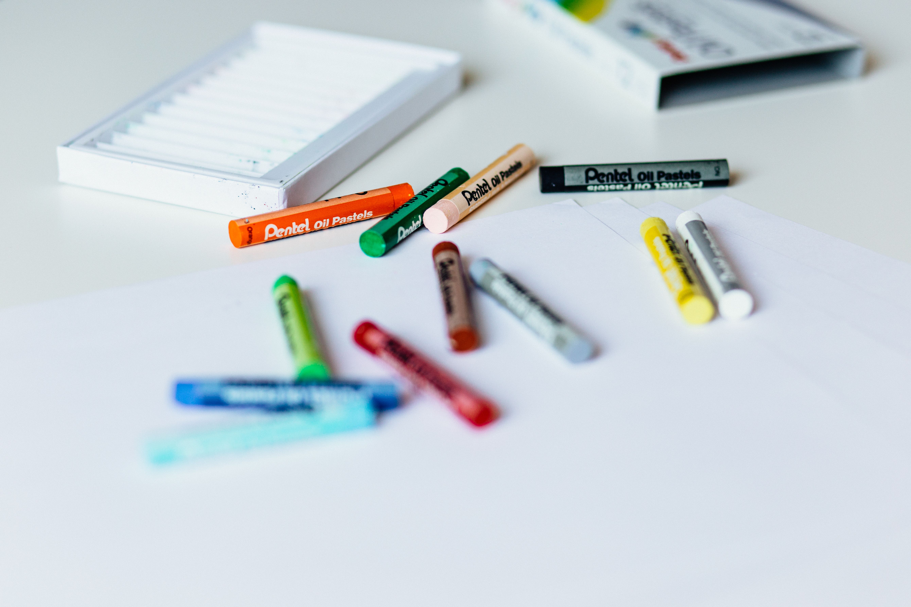

19 Sep 2018 - Allen Z
High school is an important time for students. During these four years, teenagers discover their passions, meet new people, mature (maybe?), and prepare for college. In their pursuit for success, high schoolers often desire to achieve the perfect, unweighted 4.0 GPA which requires that they go through all four years of school with A’s (90+) in every class. In this article, we discuss the many factors that play into being a top student in high school.
To learn more about how to attain a 4.0 GPA, we discussed study habits, extracurricular activities, and test taking with high-achieving students at a 6A public high school. With over 600 students all trying to be ranked at the top of their class, how do they deal with this increased competition? The interviews of three students, including two valedictorian, are recorded below.
Student 1: Violin, because sometimes music can help me relieve stress
Student 2: Learning code, reading (especially odd articles on wikipedia), I love learning.
Student 3: I play soccer and trumpet. I code. It’s fun.
Student 1: Top 1% for both
Student 2: Top 1% for both
Student 3: Top 1% for both
Student 1: 5 hours average
Student 2: 7 hours
Student 3: 8-9 hours per day
Student 1: 3 hours average excluding all those pesky distractions.
Student 2: 30 minutes per day
Student 3: An average of 1 hour a day, including homework
Student 1: Robotics and orchestra
Student 2: Computer science team, robotics team, a leadership organization, key club
Student 3: I am a part of a wind band and a soccer team.
Student 1: I think I work well under pressure so school tests are fine. But standardized tests are another story so I do falter in my SATs.
Student 2: Natural talent. Understanding things quickly and completely. I have near eidetic short term memory. Most of it is hard work
Student 3: I focus a lot on grades.
Student 1: Don’t freak yourself out, just pace yourself and don’t panic.
Student 2: Take it slow. People panic when they see a test but they need to take it slow. If they know the material, then you will get the questions right as long as you take your time.
Student 3: Pay attention in class.
Student 1: No, it’s mostly about studying hard and listening in class rather than relying on prior knowledge or talent.
Student 2: Depends on what you define intelligence as. Some people who we call smart are not and vice versa. In that context, GPA doesn’t really matter. Intelligence correlates with GPA but does not cause high GPA.
Student 3: Intelligence is important to a point, but beyond that, hard work is more important
Student 1: 18
Student 2: 17
Student 3: 18
Student 1: Attendance, the fact that exemptions are based off of absences are inconsiderate of uncontrollable circumstances such as sickness or emergencies.
Student 2: Well, how much time do you have? I guess the majority of the problem I have with school is the constant incentivizing of sports players while academic students are ignored and often undermined. Not only that but sacrificing health for grades is promoted too. At our school, exemptions are based on absences, including sick days. So, if you're sick, you are essentially incentivized to come to school and infect everyone. Yay school.
Student 3: Yes; there’s not enough incentive for the brightest students to become teachers. Teacher salary needs to be higher and more merit-based. Also, the college admissions process is unfair, and higher education is overpriced.